تابع معارض وتجارية
هذه الروابط تتحدث مع كل بناء وتعرض الفعاليات القادمة والجارية لهذا السياق فقط.
معارض وتجارية في السعودية مع وقت الفعالية ومكانها ومصدرها وحالة الجدول الحي.
هذه الروابط تتحدث مع كل بناء وتعرض الفعاليات القادمة والجارية لهذا السياق فقط.
The King Abdulaziz Public Library is hosting a specialized exhibition on horses and equestrian heritage in celebration of Saudi Founding Day. The exhibition showcases a rich collection of manuscripts, rare books, photographs, historical documents, Islamic miniatures, and illustrated works highlighting the deep-rooted equestrian legacy of the Kingdom. Marking four decades of preserving cultural heritage, the library also presents selections from its dedicated Equestrian Center, which houses more than 12,000 rare Arabic and international references on horses, alongside historic photographs captured by Princess Alice of Britain during her 1938 visit to Saudi Arabia.
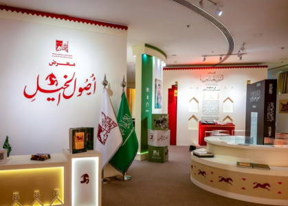
The King Abdulaziz Public Library is hosting a specialized exhibition on horses and equestrian heritage in celebration of Saudi Founding Day. The exhibition showcases a rich collection of manuscripts, rare books, photographs, historical documents, Islamic miniatures, and illustrated works highlighting the deep-rooted equestrian legacy of the Kingdom. Marking four decades of preserving cultural heritage, the library also presents selections from its dedicated Equestrian Center, which houses more than 12,000 rare Arabic and international references on horses, alongside historic photographs captured by Princess Alice of Britain during her 1938 visit to Saudi Arabia.
تفاصيل الحضور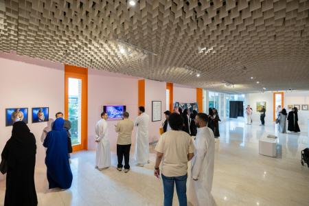
The Prince Faisal Bin Fahd Art Exhibition: Summer 2026 returns in its fourth edition, bringing together a diverse group of Saudi and resident artists under a unifying theme 'Ways of Knowing: Art as Interdisciplinary Research,' that explores societal transformation across generations. The exhibition presents a rich collection of works across multiple mediums—including abstract painting, photography, multimedia installations, and conceptual art—offering contemporary perspectives on Saudi cultural identity and evolving social values. Through creative expression, the exhibition highlights the dialogue between past, present, and future, reflecting the dynamic role of art in shaping and interpreting social change.
تفاصيل الحضور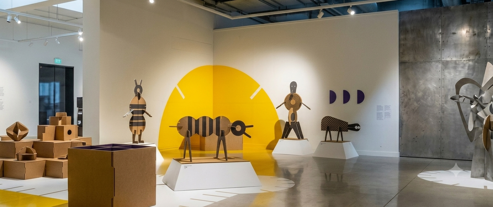
An intractive exhibition that encourages play and collabration, Inviting visitors to assemble and combine different aculptures to create a collaborative artwork while exploring the senses and imagination.
تفاصيل الحضور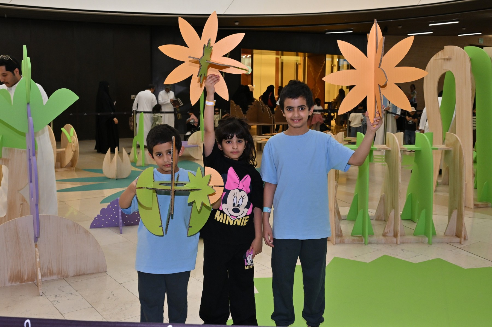
An open-ended interactive exhibition that invites children to explore, create, and play through hands-on experiences. It encourages curiosity, imagination, and discovery for children and their families.
تفاصيل الحضور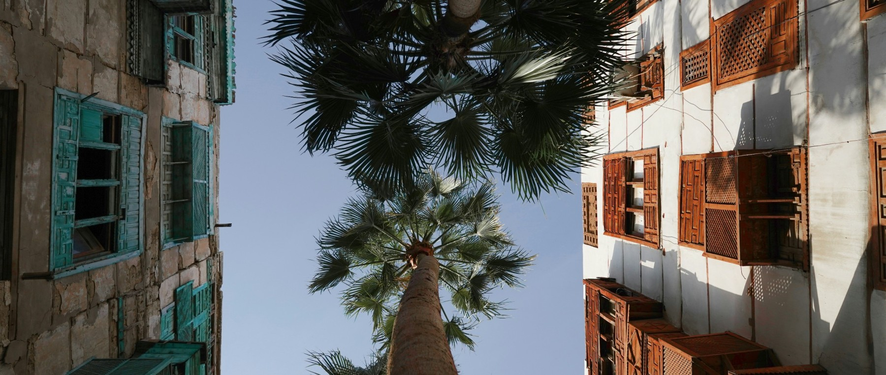
Every landscape shapes the homes built within it. This treasure hunt in Rehlaat Gallery, children follow clues across three environments: desert, mountain, and coast. Each stop reveals a model home designed in response to its surroundings, from materials and structure to layout and function. As they move between locations, children match clues to the correct homes, discovering how climate, terrain, and daily life influence the way people build and live.
تفاصيل الحضور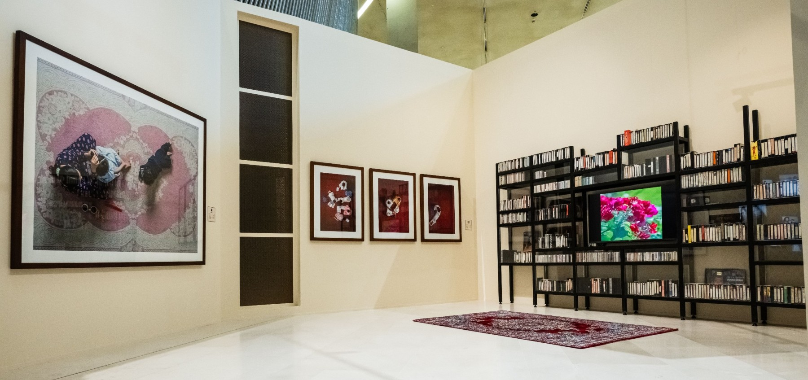
in Echoes of the Familiar Gallery, around every corner, a story unfolds. This workshop takes place on a carpet filled with familiar scenes, where everyday moments take shape through storytelling and creative exploration. Children move through these scenes, connecting details, building narratives, and expressing their ideas through drawing and simple story-making. Each visit brings together small moments into a larger picture, shaped by observation, memory, and imagination.
تفاصيل الحضور
فعالية معرض أو مؤتمر منشورة في تقويم واجهة الرياض للمعارض والمؤتمرات. المصدر الرسمي: واجهة الرياض للمعارض والمؤتمرات. Saudi Logistic & Warehousing Expo ضمن معارض وتجارية في الرياض. تبدأ الفعالية ٣٠/٠٨/٢٠٢٦، ٩:٠٠ ص وتنتهي ٠١/٠٩/٢٠٢٦، ٦:٠٠ م حسب البيانات المتاحة. تعرض الصفحة وقت الفعالية وموقعها ومصدرها وروابط التقويم والاتجاهات عند توفرها. المصدر: RFECC What's On.
تفاصيل الحضور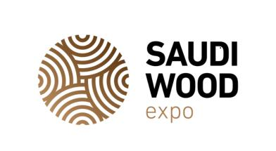
Witness the staggering growth of Saudi Arabia's woodworking industry, projected to... Saudi Wood Expo 2026 ضمن معارض وتجارية في الرياض. تبدأ الفعالية ٣٠/٠٨/٢٠٢٦، ٩:٠٠ ص وتنتهي ٠١/٠٩/٢٠٢٦، ٦:٠٠ م حسب البيانات المتاحة. تعرض الصفحة وقت الفعالية وموقعها ومصدرها وروابط التقويم والاتجاهات عند توفرها. المصدر: Eye of Riyadh Events.
تفاصيل الحضورBig 5 Construct Saudi is the Kingdom’s leading construction event, serving as a true testament to the country’s growing attractiveness in
تفاصيل الحضورNow in its ninth year, HVAC R Expo Saudi Arabia is the ultimate platform for advanced HVAC R solutions in the Kingdom. From innovative cooli
تفاصيل الحضورSaudi Arabia is the leading facilities management (FM) market in the GCC and is expected to reach $43.48 billion by 2030. A construction boom is sweep
تفاصيل الحضور
Taking place at the Riyadh Front Exhibition & Convention Center, Merath – Middle East Museums & Heritage Expo is the Kingdom’s first dedicated trade event for museums, heritage, and cultural development. The three-day exhibition brings together more than 100 exhibiting companies and over 3,000 visitors, including museums, galleries, science centers, cultural institutions, government entities, private collectors, and heritage developers. Co-located with the Saudi Entertainment and Amusement Expo (SEA Expo) and the Saudi Light and Sound Expo (SLS Expo), Merath provides a strategic platform to connect with decision-makers and explore opportunities within Saudi Arabia’s rapidly expanding $67 billion heritage and museum market, reinforcing Riyadh’s role as a growing hub for cultural innovation and investment.
تفاصيل الحضور
Discover the future of Saudi Arabia’s professional light and sound industry at the Saudi Light & Sound (SLS) Exhibition, the premier platform for event technology, lighting design, and audio innovations. The exhibition offers a rare opportunity to present AV and lighting solutions at the heart of a fast-evolving market, with the Pro AV segment valued at $30.5 million in 2024 and projected to reach $40.5 million by 2033, fueled by smart city investments and immersive event infrastructure. Visitors can connect with decision-makers driving billion-dollar projects, explore cutting-edge solutions across pro lighting, audio equipment, stage technology, digital signage, laser effects, and theatrical systems, and position their brand at the forefront of the region’s pro light and sound transformation. Register Now
تفاصيل الحضور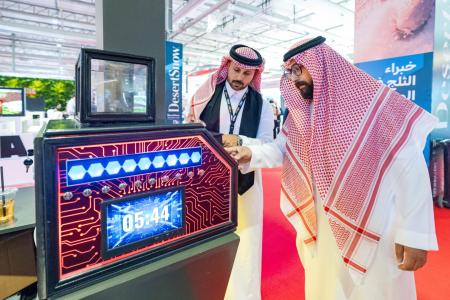
The Saudi Entertainment and Amusement (SEA) Expo, running for over 8 years in Riyadh, is the Kingdom’s premier platform for the global entertainment and attractions industry. Bringing together innovators, suppliers, and decision-makers from across the Middle East and Africa, the expo showcases the latest technologies and solutions shaping the future of leisure and attractions. More than just an exhibition, SEA Expo offers opportunities to connect with like-minded industry experts, foster collaboration, and take businesses to new heights in Saudi Arabia’s rapidly growing entertainment sector. Register Now
تفاصيل الحضور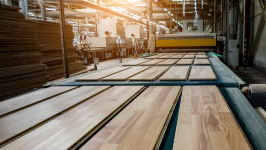
Saudi WoodShow 2026 runs 1–3 September 2026 at the Riyadh International Convention & Exhibition Center (RICEC) as Saudi Arabia’s dedicated event for the wood and woodworking machinery sector. As part of the internationally recognized Global WoodShow platform, it brings together 250 exhibitors and participants from 54 countries, welcoming thousands of industry professionals to discover wood products, machinery, and production technologies, connect with suppliers and buyers, and explore partnerships that support growth across the Kingdom’s expanding construction and manufacturing landscape.
تفاصيل الحضور
فعالية مدرجة في التقويم الرسمي لـ Dhahran Expo. الموعد: ٢ سبتمبر ٢٠٢٦ في ٠٩:٠٠ ص إلى ١١ سبتمبر ٢٠٢٦ في ٠٦:٠٠ م. المنظم: Ibrahim Mohammed Saad Al-Awad Establishment for Organizing Exhibitions and Conferences.
تفاصيل الحضور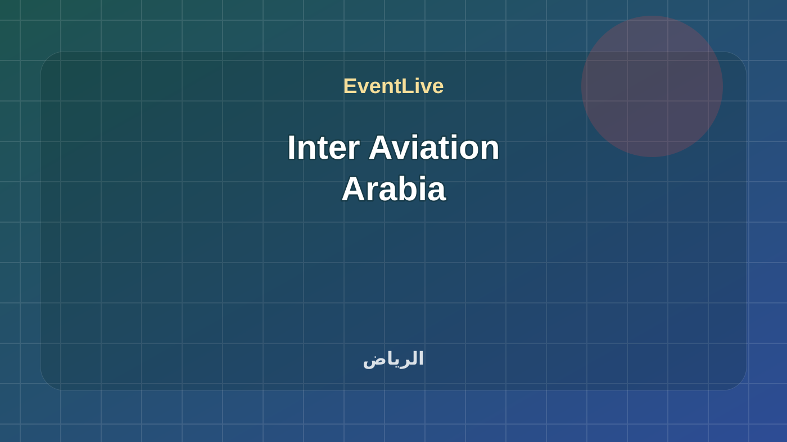
فعالية معرض أو مؤتمر منشورة في تقويم واجهة الرياض للمعارض والمؤتمرات. المصدر الرسمي: واجهة الرياض للمعارض والمؤتمرات. Inter Aviation Arabia ضمن معارض وتجارية في الرياض. تبدأ الفعالية ٠٨/٠٩/٢٠٢٦، ٩:٠٠ ص وتنتهي ١٠/٠٩/٢٠٢٦، ٦:٠٠ م حسب البيانات المتاحة. تعرض الصفحة وقت الفعالية وموقعها ومصدرها وروابط التقويم والاتجاهات عند توفرها. المصدر: RFECC What's On.
تفاصيل الحضور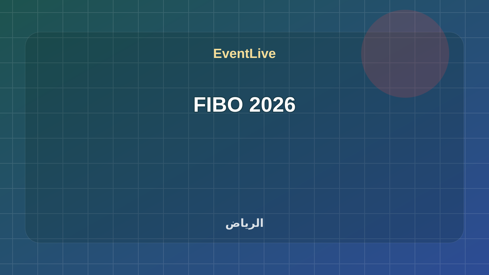
فعالية معرض أو مؤتمر منشورة في تقويم واجهة الرياض للمعارض والمؤتمرات. المصدر الرسمي: واجهة الرياض للمعارض والمؤتمرات. FIBO 2026 ضمن معارض وتجارية في الرياض. تبدأ الفعالية ٠٨/٠٩/٢٠٢٦، ٩:٠٠ ص وتنتهي ١٠/٠٩/٢٠٢٦، ٦:٠٠ م حسب البيانات المتاحة. تعرض الصفحة وقت الفعالية وموقعها ومصدرها وروابط التقويم والاتجاهات عند توفرها. المصدر: RFECC What's On.
تفاصيل الحضور